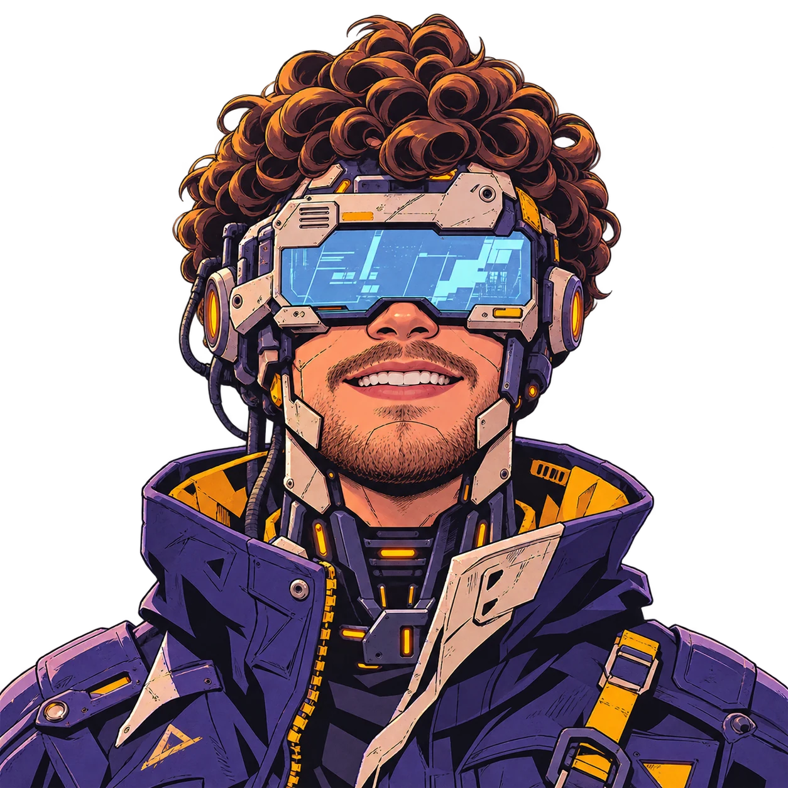
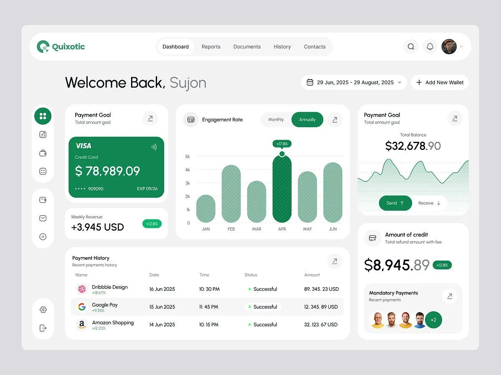

Your next
data analyst.
About
Data that turns into decisions.
Data and BI analyst with 3+ years turning business, product and public data into dashboards, KPIs and clear recommendations. Strong SQL (CTEs, window functions, BigQuery, PostgreSQL) and Python (pandas, NumPy).
Experienced in funnel and conversion analysis, A/B testing, forecasting and data-quality checks. I use AI tools daily to write and review queries and automate reports, and I'm used to presenting findings to non-technical stakeholders.
- 3+ yearsin data and BI
- 20 GBmodeled for one API
- 27deputies served daily by an AI report

ANAC Flight Intelligence
Four models behind one API, trained on 20 GB of Brazilian civil aviation records.
- One request returns airport congestion, seat occupancy, price pressure and excess-baggage risk.
- Bidirectional LSTM, multi-task FT-Transformer, MLP and a LightGBM + neural network stack.
- Polars pipeline from raw ANAC CSVs to Parquet feature tables.
- Monthly drift monitoring, prediction cache and a demo mode that keeps the API up.
- PyTorch
- LightGBM
- Polars
- FastAPI
- Railway
Mandato365
A political intelligence platform for Brazilian federal deputies. I led the data team and owned the analytics architecture, metric definitions and data quality.
- KPI dashboards and self-serve reports on PostgreSQL and Power BI (DAX) for deputies' teams.
- ROI of parliamentary budget amendments against votes per polling section (TSE 2022), with normalization and fuzzy matching in SQL.
- AI reporting in production: a daily media-clipping report with Claude-generated insights, sent by WhatsApp to 27 deputies at 7:30 a.m.
- Scheduled ETL jobs, row-level security and integrity audits that caught gaps in public-data sources.
- PostgreSQL
- Power BI
- DAX
- Claude API
- Next.js
The toolkit
Keep scrolling
What I work with
- SQLCTEs, window functions, complex joins, query optimization. BigQuery, PostgreSQL, ETL and star-schema modeling.
- AnalyticsFunnel and conversion analysis, segmentation, KPI design, A/B testing, regression, time series and forecasting.
- BI and visualizationPower BI (DAX, Power Query), Looker Studio, Tableau, SAS Visual Analytics, advanced Excel and Sheets.
- Python and MLpandas, NumPy, scikit-learn, LightGBM, PyTorch. Also R and SAS.
- AI and automationAI tools to write and review SQL, LLM insight generation (Claude API), prompt engineering, RAG, UiPath.
- EngineeringFastAPI, Git, Docker, Next.js, scheduled jobs and data-quality audits.
Experience
- 2026 to now
Data Intelligence Intern
PPN TecnologiaData processing, analysis and modeling in SAS, with SAS Visual Analytics dashboards. Automated report consolidation and recurring workflows with UiPath, including human-in-the-loop approvals.
- 2025 to 2026
Data Team Lead
Mandato365 (Atlas Dados e Tecnologia)Led the data team of a B2G SaaS for federal deputies: analytics architecture, metric definitions, KPI dashboards, SQL pipelines and AI-generated daily reports.
- 2025
Freelance Data Scientist
HOB Jardim BotânicoConversion-funnel and drop-off analysis, lead-scoring models, and audience segmentation for marketing campaigns.
- 2023 to 2024
Parliamentary Secretary
Brazilian Chamber of DeputiesAnalyzed bills, roll-call votes and attendance with SQL and Excel; statistical analysis in R; management reports for non-technical decision-makers.
- 2022 to 2023
Intern
Federal District Court of Justice (TJDFT)
Education
- Expected 2027
BSc Data Science and Machine Learning
UniCEUB - Completed
LL.B. in Law
UniCEUB
Certifications
IBM Data Science Professional Certificate, Databases and SQL for Data Science (IBM), Data Analysis with Python (IBM), Generative AI (IBM), Power BI (Microsoft). In progress: PL-300 and UiPath.
Languages
Portuguese (native), English (fluent), Spanish (intermediate)
Let's talk
I'm looking for data science and machine learning roles, remote or in Brasília. The fastest way to reach me is LinkedIn.